다크 프로그래머: 선형대수학
Wikipedia: Singular Value Decomposition
핸즈온 머신러닝: 8장-차원 축소
데이터 사이언스 스쿨: 3.5 PCA
scikit learn: Faces recognition examples using eigenfaces and SVMs
A.I. Wiki: 고유벡터, PCA, 공분산 및 엔트로피에 대한 기초 강의
1. PCA 이해를 위한 간단한 선형대수학
- 머신러닝, 딥러닝 공부 블로그엔 PCA 관련 글이 상당히 많습니다.
- 그만큼 중요한 기능이지만 많은 글에서 차원 축소에만 초점을 맞추고 있습니다.
- PCA의 본질로부터 이끌어낼 수 있는 차원을 축소 이상의 기능을 살펴보겠습니다.
- PCA는 선형대수에 뿌리를 두고 있습니다. 의미 중심으로 최대한 요약했습니다.
1.1. 고유값eigenvalue, 고유벡터eigenvector
행렬에 벡터를 곱하면 행렬이나 벡터가 나오는 것이 일반적입니다.
그런데, “어떤 행렬 A에 벡터 v를 곱했더니 벡터의 크기만 변하는” 일이 벌어질 때가 있습니다.
예를 들면, 이런 상황입니다.
- 이 때 벡터 를 고유벡터
eigenvector, 상수 를 고유값eigenvalue라고 합니다.- 기하학적으로, 행렬 의 고유벡터는 선형변환 에 의해 방향은 보존되고 크기만 변화되었습니다.
- 그리고 고유값 는 고유벡터가 몇배로 변하는지를 나타내는 값입니다.
- 애니메이션으로 표현하면 다음과 같습니다.
- 파란색 벡터들은 선형변환을 해도 방향이 일정함을 알 수 있습니다.
- 파란색 벡터의 방향이 고유벡터의 방향과 같기 때문입니다.
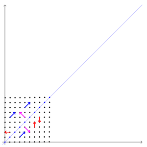
1.2. 고유값분해eigendecomposition
- 하나의 행렬 는 고유벡터와 고유값을 여럿 가질 수 있습니다.
- 행렬 의 고유벡터를 열벡터로 갖는 행렬을 ,
- 고유값들을 대각원소로 갖는 대각행렬을 라고 하면 다음 식이 성립합니다.
. 즉, 로 분해됩니다. - 이를 고유값분해
eigendecomposition이라 합니다.
- 모든 정방행렬을 고유값분해 할 수는 없습니다.
- 그러나 가능하다면 이 때의 고유벡터는 일차 독립입니다.
- 사실 거꾸로가 맞습니다.
- 정방행렬 의 고유값분해가 가능하려면 개의 일차독립인 고유벡터를 가져야 합니다.
1.2. 특이값분해Singular Value Decomposition(SVD)
- 정방행렬이 아니어도 비슷한 방식으로 분해될 수 있습니다.
- 특이값분해
Singular Value Decomposition(SVD)이라고 합니다. - 임의의 행렬의 특이값분해는 다음과 같이 정의됩니다.
- .
- 이 때 , , 는 각기 다음과 같습니다.
- 직교행렬
- 직사각 대각행렬
- 직교행렬
- 특이값분해
- 는 기하학적으로 다음과 같습니다.
- Step 1. : 회전변환
- Step 2. : 크기변화
- Step 3. : 회전변환

- 이 때 는 직교행렬
orthogonal matrix입니다.- 행벡터(의 열벡터)가 유클리드 공간의 정규 직교 기저
basis를 이룹니다. - 행렬 는 개의 feature가 있는 데이터 개로 표현될 수 있습니다.
- 의 차원 은 주성분의 단위 벡터들로 해석됩니다.
- 바꾸어 말하면 feature 개로부터 직교하는 벡터들을 추출한 것입니다.
- 이들 중 첫 개만 선택함으로써 데이터의 차원을 압축할 수 있습니다.
- 행벡터(의 열벡터)가 유클리드 공간의 정규 직교 기저
2. 주성분분석principal component analysis(PCA)
- 개의 feature를 설명하기 위해 필요한 기저의 수는 더 적을 수 있습니다.
- 은 라는 두 개의 feature가 있습니다.
- 그러나 방향에 비해 방향의 분포가 적어 방향을 무시해도 무리가 없습니다.
- 이렇게 주성분(여기에선 축)을 중심으로 분석하는 것을 주성분분석
principal component analysis(PCA)라고 합니다. - 주성분을 통해 데이터의 특질에 접근할 수 있기 때문에 많은 것이 가능합니다.
2.1. PCA 방법
- 개의 feature를 가지는 데이터가 개 있다고 합시다.
- 이 데이터셋 는 행렬로 표현될 수 있습니다.
- 의 PCA는 공분산
covariance행렬 로부터 구할 수도 있고 - 특이값분석 으로부터 구할 수도 있습니다.
2.1.1. 공분산행렬 고유값분해 PCA
Step 1. 데이터 의 공분산
covariance행렬 를 구합니다.Step 2. 로 고유값분해를 합니다.
- 각 성분의 설명은 다음과 같습니다.
- 크기순으로 정렬된 대각행렬.
- 의 고유벡터 를 열벡터로 가지는 직교행렬.
- 가장 분산이 큰 방향이 이며 의 k가 증가할수록 분산이 줄어듭니다.
2.1.2. 특이값분해 PCA
- Step 1. 데이터 를 특이값 분해합니다.
scipy.linalg.svd,numpy.linalg.svd에서 사용하는 방식입니다.- 한번에 고유값행렬 와 고유벡터행렬 를 얻을 수 있습니다.
- 직교행렬. 의 열벡터는 의 고유벡터입니다.
- 직교행렬. 의 열벡터는 , 즉 공분산 의 고유벡터입니다.
2.1.3. PCA 결과 활용
- 우리 관심사는 개의 feature를 대표적으로 설명해줄 인자들입니다.
- 따라서 의 고유벡터와 같은 의 열벡터를 PC1, …, PCn으로 사용합니다.
- 의 열벡터 수는 으로, 데이터 feature 수와 같습니다.
- 고유벡터를 전부 사용하면 PCA의 의미가 없습니다.
- 가장 주요한 고유벡터 개만을 선별하여 사용합니다.
- 선별될 의 수는 시각화(2 or 3), 해석력 확보(ex. >95%)에 따라 다릅니다.
2.2. PCA 활용: sklearn
- scikit-learn에서는
sklearn.decomposition을 통해 PCA를 제공합니다. - 상세한 내용은 핸즈온 머신러닝: 8장-차원 축소를 참고바랍니다.
MNIST 데이터에 PCA를 적용하면 다음과 같습니다.
1
2
3
4
5
6
7
8
9
10
11
12
13
14
15# MNIST data load
from sklearn.datasets import fetch_openml
mnist = fetch_openml("mnist_784", version=1)
mnist.target = mnist.target.astype(np.uint8)
# X(feature) and y(target) split
X = mnist["data"]
y = mnist["target"]
# apply PCA
from sklearn.decomposition import PCA
pca = PCA(n_components=0.95) # secure 95% of data variance
X_reduced = pca.fit_transform(X)
X_recovered = pca.inverse_transform(X_reduced)데이터의 설명력을 95% 확보하도록 고유벡터의 숫자를 설정합니다.
print(pca.n_components_)로 확인하면 154개를 이용했음을 알 수 있습니다.- MNIST 데이터의 인자 수 = 이므로, 20%가 안되는 분량입니다.
- 그럼에도 불구하고 배경이 흐려진 것 외에는 숫자가 거의 그대로 잘 보입니다.
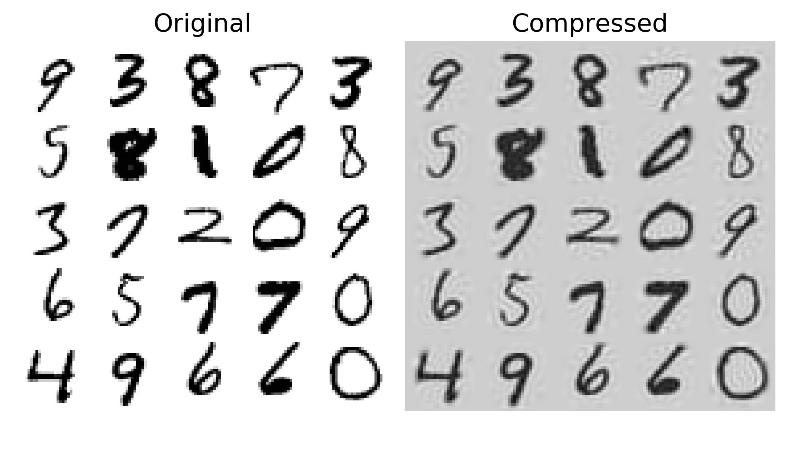
2.3. PCA 응용: eigenface
- 숫자가 아닌 얼굴에 PCA를 적용하면 재미있는 일을 할 수 있습니다.
- 상세한 내용은 데이터 사이언스 스쿨: 3.5 PCA를 참고바랍니다.
올리베티 얼굴 데이터의 20번째 얼굴을 불러오면 다음과 같습니다.
1
2
3
4
5
6
7
8
9
10
11
12
13
14
15
16
17
18
19import matplotlib.pyplot as plt
from sklearn.datasets import fetch_olivetti_faces
faces_all = fetch_olivetti_faces()
K = 20
faces = faces_all.images[faces_all.target == K]
fig, ax = plt.subplots(nrows=2, ncols=5, figsize=(10, 5))
axes = ax.ravel()
for face, axi in zip(faces, axes):
axi.imshow(face, cmap=plt.cm.bone)
axi.grid(False)
axi.xaxis.set_ticks([])
axi.yaxis.set_ticks([])
plt.subplots_adjust(top=1, bottom=0, hspace=0, wspace=0.05)
plt.tight_layout()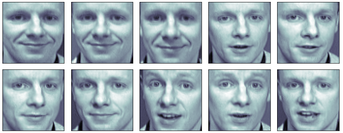
2개의 인자만 이용해서 PCA 변환과 역변환을 적용합니다.
1
2
3
4
5pca_oli = PCA(n_components=2)
faces_ori = faces_all.data[faces_all.target==K]
faces_reduced = pca_oli.fit_transform(faces_ori)
faces_recovered = pca_oli.inverse_transform(faces_reduced)역변환 결과물을 원본과의 재구성오차
reconstruction error와 함께 그립니다.1
2
3
4
5
6
7
8
9
10
11
12
13
14
15
16from sklearn.metrics import mean_squared_error
fig, ax = plt.subplots(nrows=2, ncols=5, figsize=(10, 5))
axes = ax.ravel()
for face_ori, face_recovered, axi in zip(faces_ori, faces_recovered, axes):
mse = mean_squared_error(face_ori, face_recovered)
axi.imshow(face_recovered.reshape(64,64), cmap=plt.cm.bone)
axi.set_title(f"mse={mse:1.2e}")
axi.grid(False)
axi.xaxis.set_ticks([])
axi.yaxis.set_ticks([])
plt.subplots_adjust(top=1, bottom=0, hspace=0, wspace=0.05)
plt.tight_layout()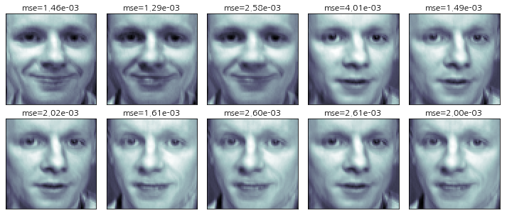
데이터의 평균과 주성분1
PC1, 주성분2PC2을 확인합니다.- 주성분도 개의 데이터를 가진 이미지입니다.
- 그래서 고유얼굴이라는 의미로 eigenface라고 부릅니다.
1
2
3face_mean = pca_oli.mean_.reshape(64, 64)
face_p1 = pca_oli.components_[0].reshape(64, 64)
face_p2 = pca_oli.components_[1].reshape(64, 64)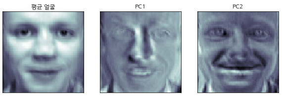
평균 얼굴에 PC1의 가중치를 달리해서 더하면, 얼굴 방향이 바뀝니다.
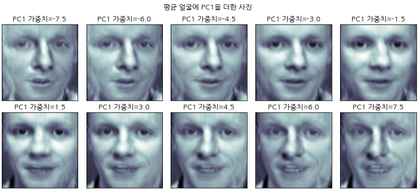
평균 얼굴에 PC2의 가중치를 달리해서 더하면, 웃는 정도가 바뀝니다.
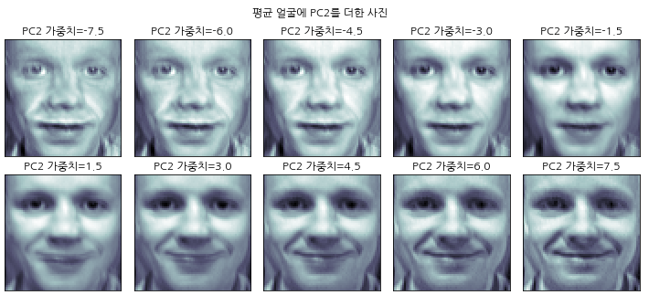
2.4. PCA 응용: 2D 원자 찾기
PCA가 데이터가 주로 분산된 방향을 찾는다는 점에 착안하여 소재 문제를 풀기도 합니다.
- 물질을 이루는 원자들은 선형
1D, 판상형2D, 입체형3D으로 배열됩니다. - 이 중 graphene과 같이 2D로 배열된 원자들은 독특한 성질이 있습니다.
- 그러나 국부적으로 2D로 배열된 원자만 골라내는 것은 쉬운 일이 아닙니다.
- 3D 공간상에 면처럼 위치한 점들
manifold이기 때문입니다.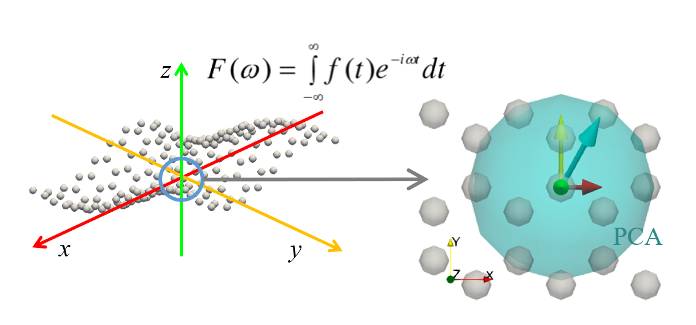
- 물질을 이루는 원자들은 선형
고체를 이루는 원자들이 구조상 주기를 가지는 성질을 이용합니다.
- 푸리에 변환을 적용해 , , 세 방향으로의 주기성을 구합니다.
- 주기성을 바탕으로 구 형태의 공간을 설정, 이 안에 들어오는 원자들만 분류합니다.
- 이 원자들의 좌표에 PCA를 적용해 국부적으로 2D 배열된 원자를 구분합니다.
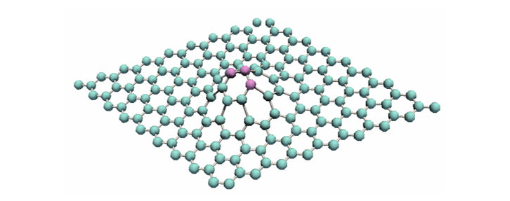
3. 비선형 데이터
- PCA는 비선형 데이터에는 취약합니다.
- PCA의 기반이 선형 행렬 연산이기 때문입니다.
- 상세한 내용은 핸즈온 머신러닝: 8장-차원 축소를 참고바랍니다.
3.1. kernel PCA
- PCA 연산 전 커널을 씌움으로써 이를 극복합니다.
- 커널은 데이터를 매우 높은 고차원 특성 공간
feature space로 매핑합니다. - 만병통치약은 아닙니다만 커널 PCA는 커널이 씌워진 상태에서 PCA를 수행하기 때문에 선형 공간의 한계를 상당히 극복할 수 있습니다.
- 커널은 데이터를 매우 높은 고차원 특성 공간
Swiss-roll 데이터에 kernel PCA를 적용해 봅시다.
1
2from sklearn.datasets import make_swiss_roll
X, t = make_swiss_roll(n_samples=1000, noise=0.2, random_state=42)kernel PCA 또한
sklearn.decomposition에KernelPCA로 탑재되어 있습니다.3가지 kernel을 씌워보겠습니다:
linear,rbf,sigmoid1
2
3lin_pca = KernelPCA(n_components=2, kernel="linear", fit_inverse_transform=True)
rbf_pca = KernelPCA(n_components=2, kernel="rbf", gamma=0.0433, fit_inverse_transform=True)
sig_pca = KernelPCA(n_components=2, kernel="sigmoid", gamma=0.001, coef0=1, fit_inverse_transform=True)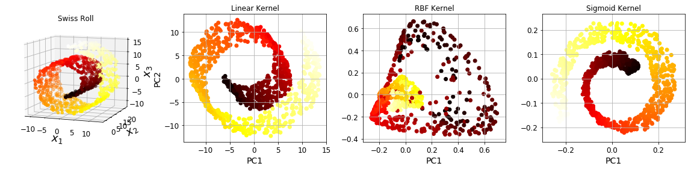
커널마다 다른 모양이 출력됩니다.
- Linear Kernel은 일반 PCA와 동일합니다.
- RBF와 Sigmoid는 형상이 원본 데이터(맨 왼쪽)와 크게 다릅니다.
- 파라미터를 바꿔가며 어떻게 변하는지 한번 보겠습니다.
polykernel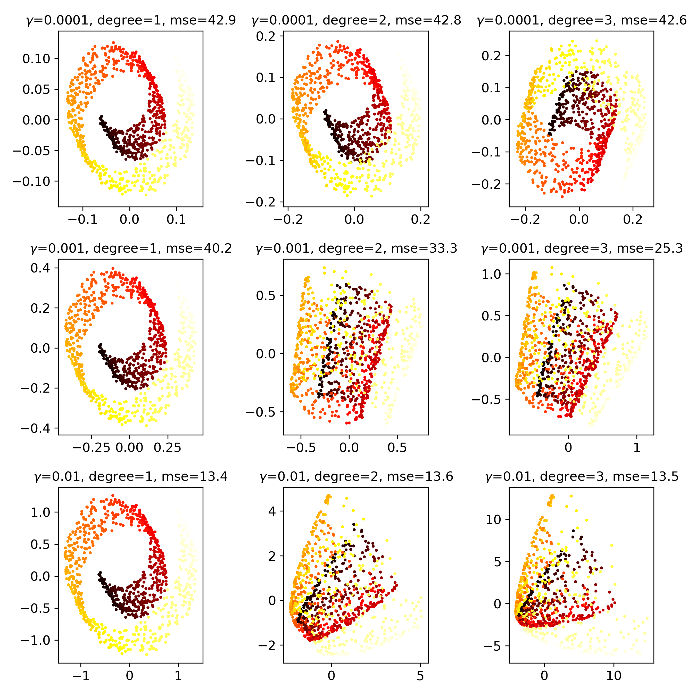
rbfkernel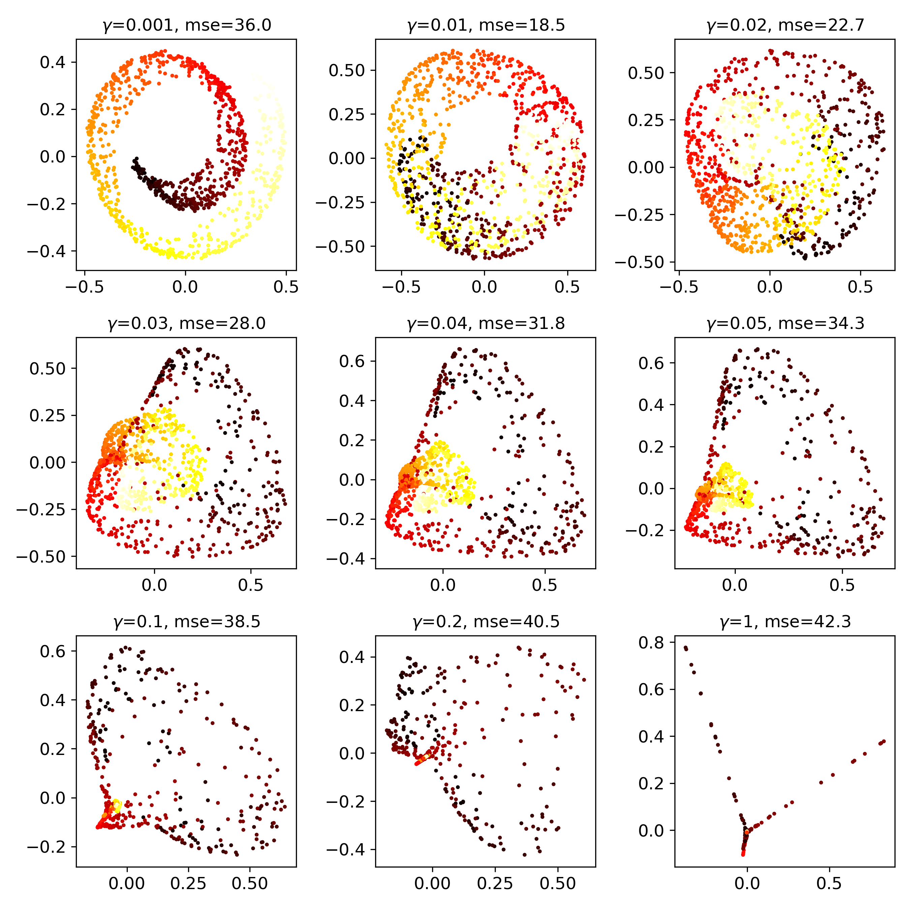
sigmoidkernel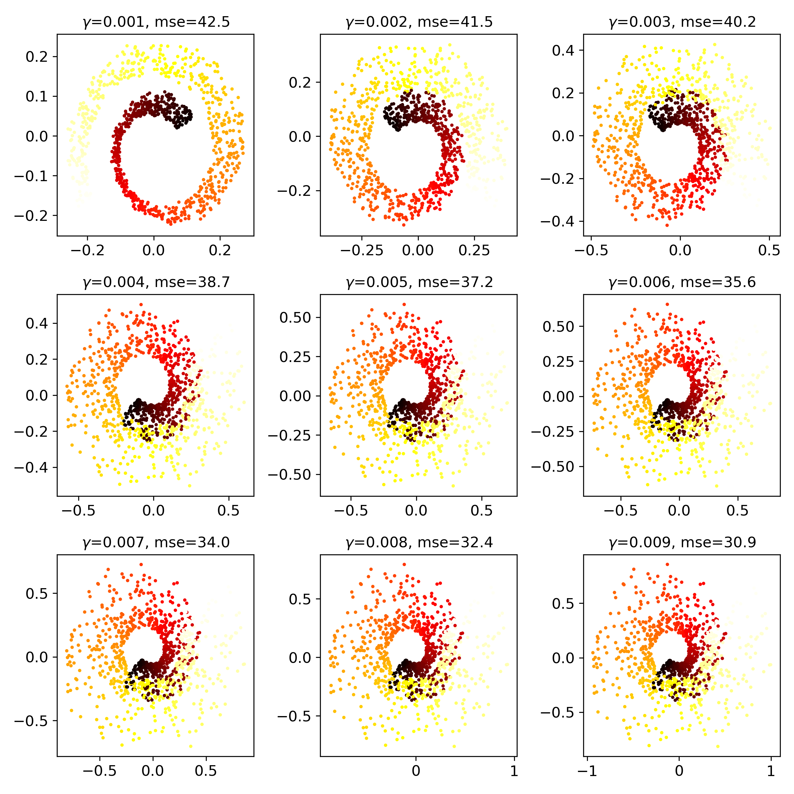
cosinekernel재구성원상
pre-image과의 오차를 줄이는 방법을 찾아야 합니다.- 커널의 종류와 파라미터를 대상으로
GridSearchCV를 수행하기도 합니다. - PCA는 전처리 과정이므로, 머신러닝 기법과 궁합이 맞는 조건을 찾기 위해
Pipeline을 구성하기도 합니다.
- 커널의 종류와 파라미터를 대상으로
LogisticRegression과의 결합 예시입니다.
1
2
3
4
5
6
7
8
9
10
11
12
13
14from sklearn.model_selection import GridSearchCV
from sklearn.linear_model import LogisticRegression
from sklearn.pipeline import Pipeline
clf = Pipeline([("kpca", KernelPCA(n_components=2)),
("log_reg", LogisticRegression())
])
param_grid = [{"kpca_gamma": np.linspace(0.03, 0.05, 10),
"kpca_kernel": ["rbf", "sigmoid"]
}]
grid_search = GridSearchCV(clf, param_grid, cv=3)
grid_search.fit(X, y)
3.2. 다른 방법들
- 매니폴드 문제를 해결하기 위해 PCA와 근본적으로 다른 방법을 사용할 수도 있습니다.
3.2.1. LLE
- 지역 선형 임베딩
Locally Linear Embedding은 투영에 의존하지 않습니다.- 각 훈련 데이터가 가장 가까운 이웃
closest neighbor에 얼마나 선형적으로 연관되어 있는지를 찾습니다. - 그 다음, 국부적인 관계가 가장 잘 보존되는 훈련 세트의 저차원 표현을 찾습니다.
- 잡음이 너무 많지 않은, 꼬인 매니폴드를 펼치는데 잘 작동합니다.
- 각 훈련 데이터가 가장 가까운 이웃
- Swiss Roll을 LLE로 푼 예시입니다.
1
2
3
4
5
6from sklearn.manifold import LocallyLinearEmbedding
lle = LocallyLinearEmbedding(n_components=2, n_neighbors=10)
X, t = make_swiss_roll(n_samples=1000, noise=0.2, random_state=42)
X_reduced = lle.fit_transform(X)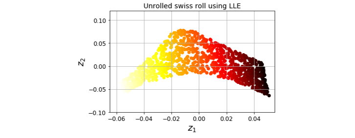
3.2.2. MDS
- 데이터간 거리를 보존하면서 차원을 축소합니다.
3.2.3. Isomap
- 각 데이터를 가장 가까운 이웃과 연결해서 그래프를 만듭니다.
- 샘플간 지오데식 거리
geodesic distance(두 노드 사이의 최단 경로를 이루는 노드의 수)를 유지하며 차원을 축소합니다.
3.2.4. t-SNE
- 비슷한 데이터를 가까이, 비슷하지 않은 샘플은 멀리 유지하며 차원을 축소합니다.
- 고차원 데이터의 군집을 시각화할 때 주로 사용됩니다.
- 위 세 알고리즘을 통해 Swiss-roll을 변형하면 다음과 같습니다.
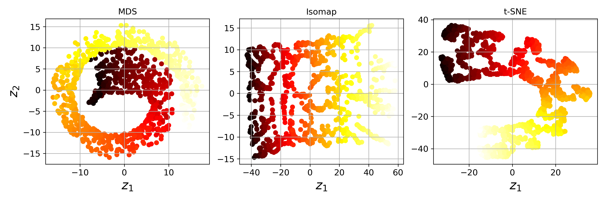